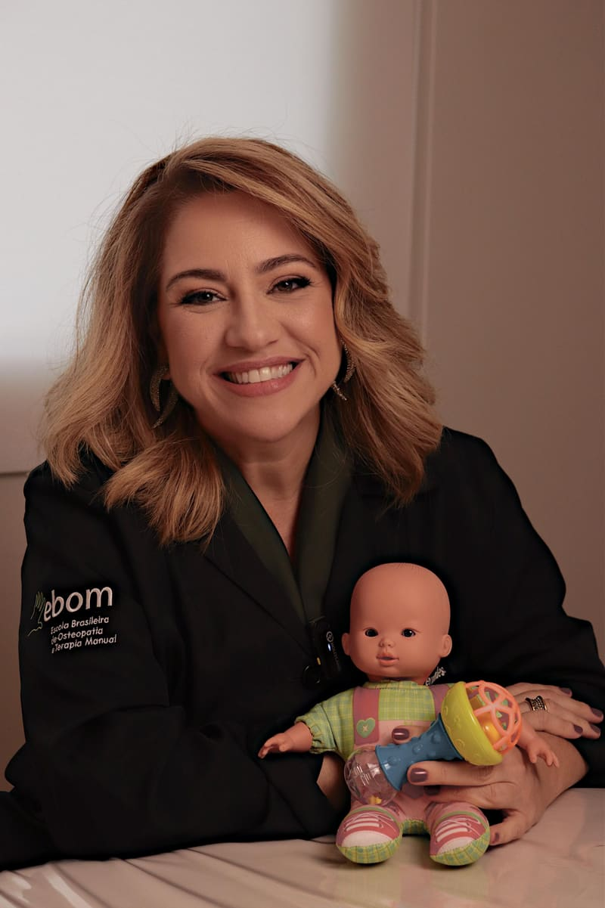

Osteopatia para bebês e recém-nascidos
Um cuidado delicado desde os primeiros dias de vida, com a experiência de uma osteopata neonatologista.
Um cuidado delicado desde os primeiros dias
O nascimento é intenso para o corpo do bebê. Com toques extremamente suaves e seguros, a osteopatia pediátrica resolve as tensões e os desconfortos comuns dos primeiros meses, identificando a causa deles e respeitando o tempo e a sensibilidade de cada pequeno.
- Cólicas e gases
- Refluxo
- Dificuldade na amamentação
- Torcicolo congênito
- Assimetrias da cabecinha
- Sono agitado e irritabilidade

Cuidado com recém-nascidos desde os primeiros dias de vida
Como osteopata neonatologista, atendo bebês desde os primeiros dias de vida. Minha formação inclui pediatria e cuidados intensivos com bebês de alto risco, e as técnicas usadas nessa fase são extremamente suaves e seguras, completamente diferentes das aplicadas em adultos.
Como é a consulta do bebê
Um encontro tranquilo, no ritmo do bebê, com espaço para todas as perguntas da família.
Conversa com a família
Ouço com calma a história da gestação, do parto e dos primeiros dias, e tudo o que vocês têm observado no bebê.
Exame minucioso
Examino minuciosamente o corpinho do bebê, com toques delicados, para encontrar a origem do desconforto.
Tratamento suave
Aplico técnicas extremamente suaves e seguras, sempre respeitando o conforto e o tempo do pequeno. Vocês participam de todo o processo.
Orientações para casa
Vocês saem entendendo o que foi encontrado e com orientações práticas para o dia a dia com o bebê.
Seu corpo merece esse cuidado
Seja para o seu bebê, para a sua gestação ou para aquela dor que já dura tempo demais, comece por uma conversa. Respondo pessoalmente.